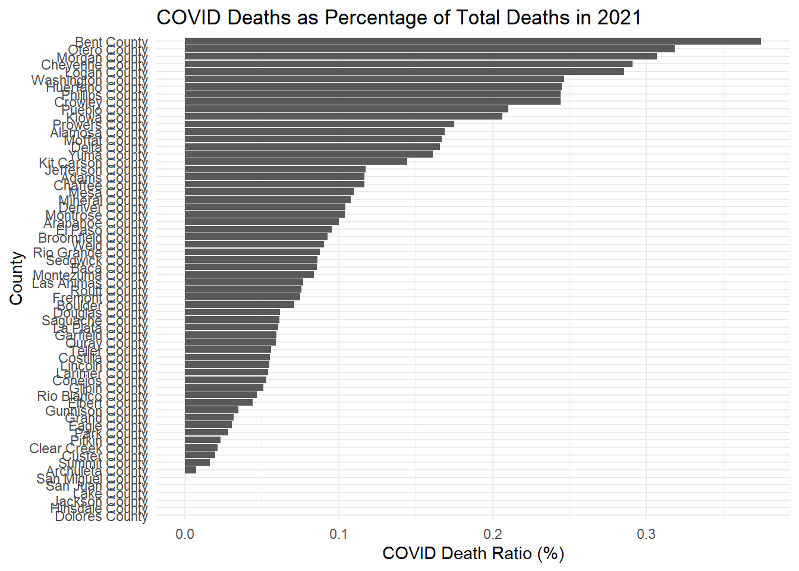
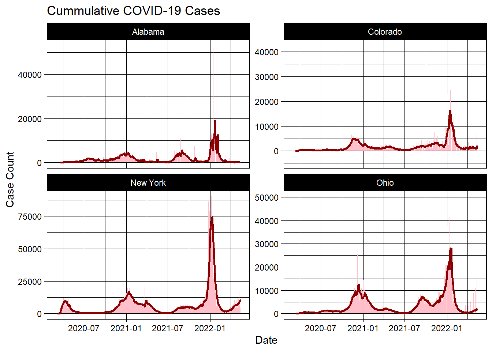
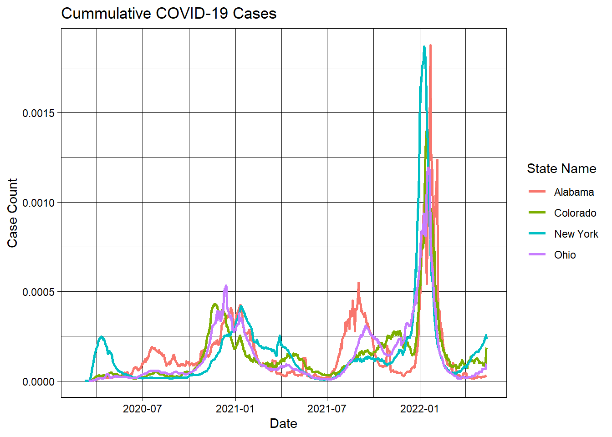
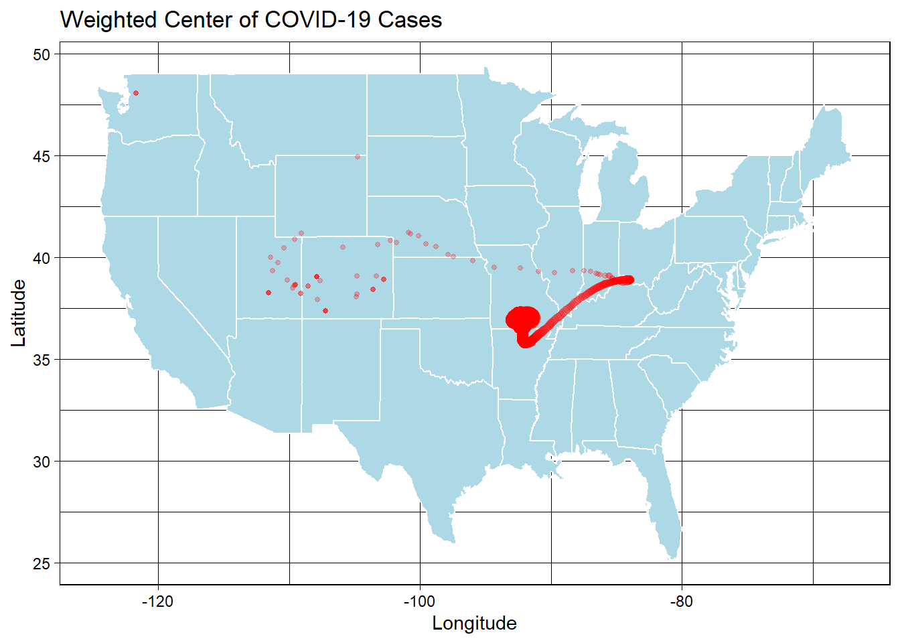

library(zoo)
Attaching package: 'zoo'The following objects are masked from 'package:base':
as.Date, as.Date.numericlibrary(flextable)ESS330
library(zoo)
Attaching package: 'zoo'The following objects are masked from 'package:base':
as.Date, as.Date.numericlibrary(flextable)##Question 1 # Open data is important because it allows for transparency within science and accurate information sharing about current events and public/environmental health issues. If this data disappears it becomes difficult for stakeholders to have the information they need to make informed decisions. Having historical and real time data openly accessible also allows for more collaboration.
##Question 2
#Step 1: Read in data
library(tidyverse)── Attaching core tidyverse packages ──────────────────────── tidyverse 2.0.0 ──
✔ dplyr 1.1.4 ✔ readr 2.1.5
✔ forcats 1.0.0 ✔ stringr 1.5.1
✔ ggplot2 3.5.1 ✔ tibble 3.2.1
✔ lubridate 1.9.4 ✔ tidyr 1.3.1
✔ purrr 1.0.2
── Conflicts ────────────────────────────────────────── tidyverse_conflicts() ──
✖ purrr::compose() masks flextable::compose()
✖ dplyr::filter() masks stats::filter()
✖ dplyr::lag() masks stats::lag()
ℹ Use the conflicted package (<http://conflicted.r-lib.org/>) to force all conflicts to become errorsurl = "https://raw.githubusercontent.com/nytimes/covid-19-data/master/us-counties.csv"
covid_data = read_csv(url)Rows: 2502832 Columns: 6
── Column specification ────────────────────────────────────────────────────────
Delimiter: ","
chr (3): county, state, fips
dbl (2): cases, deaths
date (1): date
ℹ Use `spec()` to retrieve the full column specification for this data.
ℹ Specify the column types or set `show_col_types = FALSE` to quiet this message.#Step 2: Create an object called my.date and set it as “2022-01-01” - ensure this is a date object:. Create a object called my.state and set it to “Colorado”.
txt <- "2022-01-01"
class(txt)[1] "character"date_example <- as.Date(txt)
class(date_example)[1] "Date"my.date <- as.Date("2022-02-01")
my.state <- "Colorado"my.state = "Colorado"#Step 3
colorado <- covid_data %>%
filter(state == "Colorado") %>%
group_by(county) %>%
arrange(date) %>%
mutate(new_cases = cases - lag(cases), new_deaths = deaths - lag(deaths)) %>%
ungroup()#Step 4
filter(colorado, date == "2022-02-01") %>%
slice_max(cases, n = 5) %>%
select(Date = date, County = county, Cases = cases) %>%
flextable () %>%
set_caption("Most Cummulative Cases")Date | County | Cases |
|---|---|---|
2022-02-01 | El Paso | 170,673 |
2022-02-01 | Denver | 159,022 |
2022-02-01 | Arapahoe | 144,255 |
2022-02-01 | Adams | 126,768 |
2022-02-01 | Jefferson | 113,240 |
filter(colorado, date == "2022-02-01") %>%
slice_max(cases, n = 5) %>%
select(Date = date, County = county, Cases = new_cases) %>%
flextable() %>%
set_caption(caption = "Most New Cases")Date | County | Cases |
|---|---|---|
2022-02-01 | El Paso | 630 |
2022-02-01 | Denver | 389 |
2022-02-01 | Arapahoe | 401 |
2022-02-01 | Adams | 326 |
2022-02-01 | Jefferson | 291 |
##Question 3
#Step 1
pop_url <- 'https://www2.census.gov/programs-surveys/popest/datasets/2020-2023/counties/totals/co-est2023-alldata.csv'
pop_dat <- read_csv(pop_url)Rows: 3195 Columns: 67
── Column specification ────────────────────────────────────────────────────────
Delimiter: ","
chr (5): SUMLEV, STATE, COUNTY, STNAME, CTYNAME
dbl (62): REGION, DIVISION, ESTIMATESBASE2020, POPESTIMATE2020, POPESTIMATE2...
ℹ Use `spec()` to retrieve the full column specification for this data.
ℹ Specify the column types or set `show_col_types = FALSE` to quiet this message.pop <- pop_dat %>%
filter(COUNTY !=0) %>%
mutate(fips = paste0(STATE, COUNTY)) %>%
select(fips, contains('NAME'), contains('2021'))#Step 2
names(pop) [1] "fips" "STNAME" "CTYNAME"
[4] "POPESTIMATE2021" "NPOPCHG2021" "BIRTHS2021"
[7] "DEATHS2021" "NATURALCHG2021" "INTERNATIONALMIG2021"
[10] "DOMESTICMIG2021" "NETMIG2021" "RESIDUAL2021"
[13] "GQESTIMATES2021" "RBIRTH2021" "RDEATH2021"
[16] "RNATURALCHG2021" "RINTERNATIONALMIG2021" "RDOMESTICMIG2021"
[19] "RNETMIG2021" dim(pop)[1] 3195 19#There are 3195 rows and 19 columns in the modified data set. Some dames of the columns are "fips", "CITYNAME", "STNAME", "BIRTHS2021", and "DEATHS2021". Some of these names match the covid data including fips, state, and deaths. #Step 3
range(pop_dat$POPESTIMATE2021)[1] 54 39145060#The range of populations seen in Colorado counties in 2021 is 39,145,006#Step 4
library(dplyr)
joined_dat <- colorado %>%
left_join(select(pop, fips, pop = POPESTIMATE2021), by = "fips") %>%
filter(date == my.date) %>%
mutate(per_capita_cum_cases = cases / pop,
per_capita_new_cases = new_cases / pop,
per_capita_new_deaths = new_deaths / pop)
glimpse(joined_dat)Rows: 64
Columns: 12
$ date <date> 2022-02-01, 2022-02-01, 2022-02-01, 2022-02-01,…
$ county <chr> "Adams", "Alamosa", "Arapahoe", "Archuleta", "Ba…
$ state <chr> "Colorado", "Colorado", "Colorado", "Colorado", …
$ fips <chr> "08001", "08003", "08005", "08007", "08009", "08…
$ cases <dbl> 126768, 4122, 144255, 2727, 706, 2199, 58046, 12…
$ deaths <dbl> 1224, 58, 1172, 9, 8, 46, 351, 104, 40, 9, 10, 4…
$ new_cases <dbl> 326, 33, 401, 6, 3, 22, 208, 19, 22, 3, 3, 5, 7,…
$ new_deaths <dbl> 2, 0, 0, 0, 0, 0, 3, 0, 0, 0, 0, 0, 0, 0, 0, 0, …
$ pop <dbl> 523544, 16579, 656855, 13806, 3490, 5339, 327084…
$ per_capita_cum_cases <dbl> 0.2421344, 0.2486278, 0.2196147, 0.1975228, 0.20…
$ per_capita_new_cases <dbl> 0.0006226793, 0.0019904699, 0.0006104848, 0.0004…
$ per_capita_new_deaths <dbl> 3.820118e-06, 0.000000e+00, 0.000000e+00, 0.0000…#Step 5
joined_dat %>%
select(County = county, Cases = per_capita_cum_cases) %>%
slice_max(Cases, n= 5) %>%
flextable() %>%
set_caption(caption = "Most Cummulative Cases Per Capita")County | Cases |
|---|---|
Crowley | 0.5117698 |
Bent | 0.4118749 |
Pitkin | 0.3429659 |
Lincoln | 0.3424082 |
Logan | 0.3047701 |
joined_dat %>%
select(County = county, Cases = per_capita_new_cases) %>%
slice_max(Cases, n = 5) %>%
flextable() %>%
set_caption(caption = "Most New Cases Per Capita")County | Cases |
|---|---|
Crowley | 0.009764603 |
Bent | 0.004120622 |
Sedgwick | 0.003869304 |
Washington | 0.002875924 |
Las Animas | 0.002651039 |
##Question 4
library(flextable)
last_14_days <- pop %>%
inner_join(colorado, by = "fips") %>%
filter(between(date, my.date - 13, my.date)) %>%
group_by(county) %>%
summarize(lag = sum(new_cases) / (POPESTIMATE2021[1]/ 100000))
last_14_days %>%
select(County = county, Cases = lag) %>%
slice_max(Cases, n = 5) %>%
flextable() %>%
set_caption(caption = "Cases per 100,000 in the last 14 days")County | Cases |
|---|---|
Crowley | 3,923.278 |
Lincoln | 3,599.488 |
Alamosa | 3,594.909 |
Mineral | 3,336.921 |
Conejos | 3,152.203 |
##Question 5
tmp.date <- as.Date("2021-02-01")
lubridate::year(tmp.date)[1] 2021lubridate::month(tmp.date)[1] 2lubridate::yday(tmp.date)[1] 32county_deaths <- colorado %>%
filter(date == tmp.date) %>%
left_join(pop, by = "fips") %>%
group_by(fips, CTYNAME) %>%
summarise(death_ratio = 100 * sum(deaths, na.rm = TRUE) / first(POPESTIMATE2021)) %>%
ungroup() `summarise()` has grouped output by 'fips'. You can override using the
`.groups` argument.library(ggplot2)
ggplot(county_deaths, aes(x = death_ratio,
y = reorder(CTYNAME, death_ratio))) +
geom_col() +
theme_minimal() +
labs(x = "COVID Death Ratio (%)",
y = "County",
title = "COVID Deaths as Percentage of Total Deaths in 2021")
##Question 6
#Step 1
colorado_1 <- covid_data %>%
group_by(date, state) %>%
summarise(cases = sum(cases)) %>%
filter(state %in% c('New York', "Ohio", 'Colorado', "Alabama"))%>%
group_by(state) %>%
mutate(newCases = cases - lag(cases), roll = zoo::rollmean(newCases, k = 7, align = "right", fill = NA)) %>%
ungroup()`summarise()` has grouped output by 'date'. You can override using the
`.groups` argument.#Step 2
library(ggplot2)
ggplot(colorado_1, aes(x = date)) +
geom_col(aes(y = newCases), fill = "pink", col = NA) +
geom_line(aes(y = roll), col = "darkred", linewidth = 1) +
theme_linedraw() +
facet_wrap(~state, nrow = 2, scales = "free_y") +
labs(title = "Cummulative COVID-19 Cases", x = "Date", y = "Case Count")Warning: Removed 4 rows containing missing values or values outside the scale range
(`geom_col()`).Warning: Removed 7 rows containing missing values or values outside the scale range
(`geom_line()`).
#Step 3
pp = pop %>%
group_by(STNAME) %>%
summarise(colorado_1 =
sum(POPESTIMATE2021)) %>%
inner_join(colorado_1, by = c("STNAME" = "state")) %>%
mutate(perCap = newCases / colorado_1) %>%
group_by(STNAME) %>%
mutate(roll = zoo::rollmean(perCap, k = 7, align = "right", fill = NA)) %>%
ungroup()#Step 4
ggplot(pp, aes(x = date)) +
geom_line(aes(y = roll, col = STNAME), size = 1) +
theme_linedraw() +
labs(title = "Cummulative COVID-19 Cases", x = "Date", y = "Case Count",
color = "State Name")Warning: Using `size` aesthetic for lines was deprecated in ggplot2 3.4.0.
ℹ Please use `linewidth` instead.Warning: Removed 28 rows containing missing values or values outside the scale range
(`geom_line()`).
#Step 5
# The scaling by population makes it look like there are more cases in Alabama and Colorado than in the previous visualization. This graph makes Ohio look better and Alabama look worse. ##Question 7
county_cen = read_csv('https://raw.githubusercontent.com/mikejohnson51/csu-ess-330/refs/heads/main/resources/county-centroids.csv')Rows: 3221 Columns: 3
── Column specification ────────────────────────────────────────────────────────
Delimiter: ","
chr (1): fips
dbl (2): LON, LAT
ℹ Use `spec()` to retrieve the full column specification for this data.
ℹ Specify the column types or set `show_col_types = FALSE` to quiet this message.meta = read_csv('https://raw.githubusercontent.com/mikejohnson51/csu-ess-330/refs/heads/main/resources/county-centroids.csv') %>%
inner_join(covid_data) %>%
group_by(date) %>%
summarise(wmX_c = sum(LON*cases) / sum(cases), wmY_c = sum(LAT*cases) /
sum(cases), cases = sum(cases)) %>%
arrange(date) %>%
mutate(d = 1:n())Rows: 3221 Columns: 3
── Column specification ────────────────────────────────────────────────────────
Delimiter: ","
chr (1): fips
dbl (2): LON, LAT
ℹ Use `spec()` to retrieve the full column specification for this data.
ℹ Specify the column types or set `show_col_types = FALSE` to quiet this message.
Joining with `by = join_by(fips)`ggplot(meta) +
borders("state", fill = "lightblue", colour = "white") +
geom_point(aes(x = wmX_c, y = wmY_c, size = cases), color = "red", alpha =.25) +
theme_linedraw() +
labs(color = "Time",
size = "Cases",
x = "Longitude", y = "Latitude",
title = "Weighted Center of COVID-19 Cases") +
theme(legend.position = "none") 
#Based on the output it looks like there was a major outbreak in Missouri which then spread to Ohio, and moved west towards Colorado and Utah.